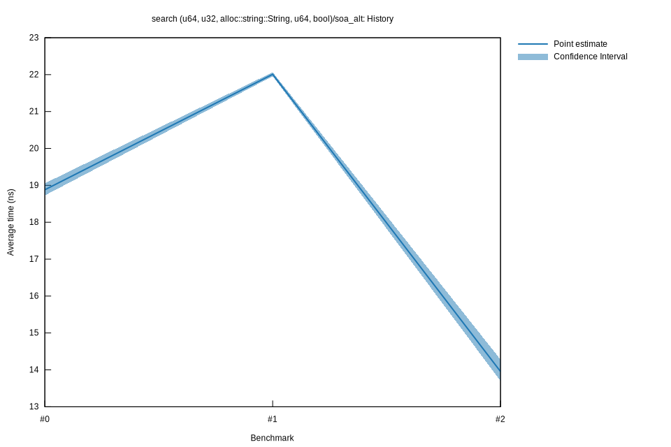

# 22023-02-24T22:41:56+01:00
|
Lower Bound |
Estimate |
Upper Bound |
| Value: |
13.70ns |
13.96ns |
14.28ns |
| Throughput: |
72.99Melem/s |
71.66Melem/s |
70.03Melem/s |
| Change in Value: |
-40.573% |
-37.639% |
-35.088% |
| Change in Throughput: |
+68.274% |
+60.357% |
+54.054% |
No change in performance detected.
# 12023-02-24T16:27:23+01:00
|
Lower Bound |
Estimate |
Upper Bound |
| Value: |
21.96ns |
22.01ns |
22.06ns |
| Throughput: |
45.55Melem/s |
45.44Melem/s |
45.32Melem/s |
| Change in Value: |
+12.906% |
+17.139% |
+22.362% |
| Change in Throughput: |
-11.431% |
-14.631% |
-18.275% |
No change in performance detected.
# 02023-02-24T15:56:03+01:00
|
Lower Bound |
Estimate |
Upper Bound |
| Value: |
18.73ns |
18.88ns |
19.05ns |
| Throughput: |
53.40Melem/s |
52.97Melem/s |
52.48Melem/s |